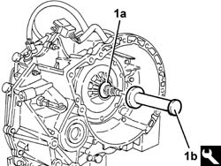

2130B62 oil seal for transmission input shaft - replace with automatic transmission removed
- Path
- Procedures > 21 GEARBOX > 2130 AUTOMATIC TRANSMISSION AND DIFFERENTIAL > 2130B automatic transmission components > 2130B62 oil seal for transmission input shaft - replace with automatic transmission removed
- Kind
- repair procedure (removal / refitting; the operation number is the code)
- Applies to
- engines: 2.5 V6, 3.2 V6, 1.9 JTD 8v , 2.4 JTD 10v; all production periods
- Interactive page
- https://sloeber94.github.io/elrnDB-a156/en/#/3237998
Applies to: engines: 2.5 V6, 3.2 V6, 1.9 JTD 8v , 2.4 JTD 10v; all production periods
 Removing
Removing
 Refitting
Refitting2130B10 automatic transmission torque converter - r + r with transmission removed
Remove the gearbox input shaft oil seal.
Applies to: engines: 2.5 V6, 3.2 V6, 1.9 JTD 8v , 2.4 JTD 10v; all production periods
Refitting
Removing1. Fit a new gearbox input shaft oil seal (1a) using the tool (1b).
 | Name | Country |
|---|---|---|
1b | Fitting tool | 1.870.757.000 |

Applies to: engines: 2.5 V6, 3.2 V6, 1.9 JTD 8v , 2.4 JTD 10v; all production periods
2130B10 automatic transmission torque converter - r + r with transmission removed